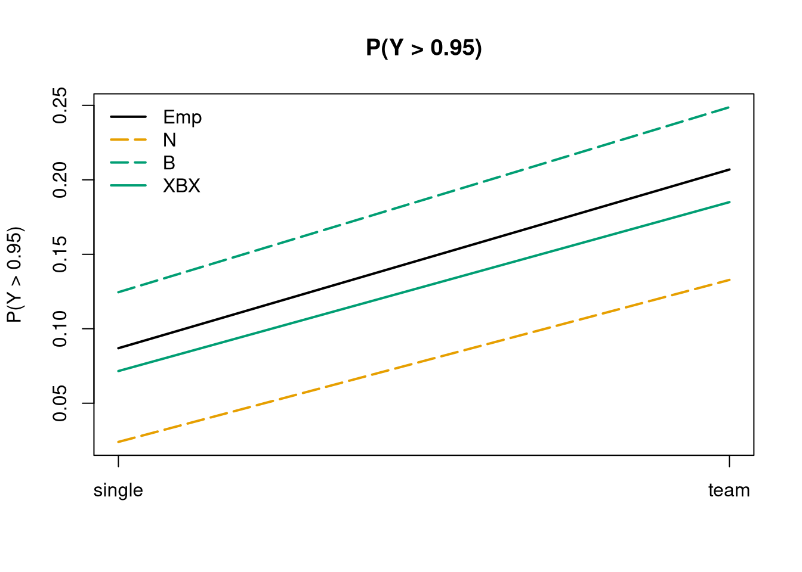

library("betareg")
options(digits = 4)
## data and add ad-hoc scaling (a la Smithson & Verkuilen)
data("LossAversion", package = "betareg")
LossAversion <- transform(LossAversion,
invests = (invest * (nrow(LossAversion) - 1) + 0.5)/nrow(LossAversion))
## models: normal (with constant variance), beta, extended-support beta mixture
la_n <- lm(invest ~ grade * (arrangement + age) + male, data = LossAversion)
summary(la_n)
Call:
lm(formula = invest ~ grade * (arrangement + age) + male, data = LossAversion)
Residuals:
Min 1Q Median 3Q Max
-0.7735 -0.1967 0.0024 0.1916 0.5724
Coefficients:
Estimate Std. Error t value Pr(>|t|)
(Intercept) 0.2844 0.1575 1.81 0.07136 .
grade10-12 -0.8437 0.2815 -3.00 0.00284 **
arrangementteam 0.0628 0.0302 2.08 0.03788 *
age 0.0115 0.0124 0.93 0.35041
maleyes 0.1035 0.0232 4.46 9.9e-06 ***
grade10-12:arrangementteam 0.1507 0.0455 3.32 0.00097 ***
grade10-12:age 0.0458 0.0185 2.47 0.01380 *
---
Signif. codes: 0 '***' 0.001 '**' 0.01 '*' 0.05 '.' 0.1 ' ' 1
Residual standard error: 0.247 on 563 degrees of freedom
Multiple R-squared: 0.158, Adjusted R-squared: 0.149
F-statistic: 17.7 on 6 and 563 DF, p-value: <2e-16la_b <- betareg(invests ~ grade * (arrangement + age) + male | arrangement + male + grade,
data = LossAversion)
summary(la_b)
Call:
betareg(formula = invests ~ grade * (arrangement + age) + male | arrangement +
male + grade, data = LossAversion)
Quantile residuals:
Min 1Q Median 3Q Max
-3.948 -0.594 -0.042 0.554 4.439
Coefficients (mean model with logit link):
Estimate Std. Error z value Pr(>|z|)
(Intercept) -1.4139 0.6197 -2.28 0.0225 *
grade10-12 -2.9435 1.2520 -2.35 0.0187 *
arrangementteam 0.2250 0.1175 1.92 0.0554 .
age 0.0906 0.0486 1.87 0.0621 .
maleyes 0.4553 0.0990 4.60 4.2e-06 ***
grade10-12:arrangementteam 0.6549 0.2003 3.27 0.0011 **
grade10-12:age 0.1513 0.0806 1.88 0.0605 .
Phi coefficients (precision model with log link):
Estimate Std. Error z value Pr(>|z|)
(Intercept) 1.194 0.084 14.21 < 2e-16 ***
arrangementteam 0.406 0.122 3.33 0.00087 ***
maleyes -0.555 0.113 -4.93 8.2e-07 ***
grade10-12 -0.553 0.104 -5.31 1.1e-07 ***
---
Signif. codes: 0 '***' 0.001 '**' 0.01 '*' 0.05 '.' 0.1 ' ' 1
Type of estimator: ML (maximum likelihood)
Log-likelihood: 94.4 on 11 Df
Pseudo R-squared: 0.154
Number of iterations: 24 (BFGS) + 3 (Fisher scoring) la_xbx <- betareg(invest ~ grade * (arrangement + age) + male | arrangement + male + grade,
data = LossAversion)
summary(la_xbx)
Call:
betareg(formula = invest ~ grade * (arrangement + age) + male | arrangement +
male + grade, data = LossAversion)
Randomized quantile residuals:
Min 1Q Median 3Q Max
-3.363 -0.693 -0.015 0.698 2.989
Coefficients (mu model with logit link):
Estimate Std. Error z value Pr(>|z|)
(Intercept) -0.8650 0.5193 -1.67 0.09577 .
grade10-12 -3.0962 1.0529 -2.94 0.00328 **
arrangementteam 0.2079 0.0987 2.11 0.03508 *
age 0.0489 0.0406 1.20 0.22857
maleyes 0.3792 0.0842 4.50 6.6e-06 ***
grade10-12:arrangementteam 0.5672 0.1690 3.36 0.00079 ***
grade10-12:age 0.1687 0.0677 2.49 0.01275 *
Phi coefficients (phi model with log link):
Estimate Std. Error z value Pr(>|z|)
(Intercept) 1.756 0.128 13.70 < 2e-16 ***
arrangementteam 0.325 0.145 2.25 0.02446 *
maleyes -0.484 0.136 -3.56 0.00037 ***
grade10-12 -0.316 0.131 -2.41 0.01608 *
Exceedence parameter (extended-support xbetax model):
Estimate Std. Error z value Pr(>|z|)
Log(nu) -2.273 0.245 -9.27 <2e-16 ***
---
Signif. codes: 0 '***' 0.001 '**' 0.01 '*' 0.05 '.' 0.1 ' ' 1
Exceedence parameter nu: 0.103
Type of estimator: ML (maximum likelihood)
Log-likelihood: -71.8 on 12 Df
Number of iterations in BFGS optimization: 45 ## coefficients in XBX are typically somewhat shrunken compared to beta
cbind(XBX = coef(la_xbx), Beta = c(coef(la_b), NA)) XBX Beta
(Intercept) -0.86495 -1.41389
grade10-12 -3.09624 -2.94347
arrangementteam 0.20790 0.22498
age 0.04889 0.09061
maleyes 0.37925 0.45534
grade10-12:arrangementteam 0.56724 0.65487
grade10-12:age 0.16866 0.15129
(phi)_(Intercept) 1.75629 1.19429
(phi)_arrangementteam 0.32525 0.40631
(phi)_maleyes -0.48406 -0.55481
(phi)_grade10-12 -0.31593 -0.55271
Log(nu) -2.27289 NA## predictions on subset: (at least one) male players, higher grades, around age 16
la <- subset(LossAversion, male == "yes" & grade == "10-12" & age >= 15 & age <= 17)
la_nd <- data.frame(arrangement = c("single", "team"), male = "yes", age = 16, grade = "10-12")
## empirical vs fitted E(Y)
la_nd$mean_emp <- aggregate(invest ~ arrangement, data = la, FUN = mean)$invest
la_nd$mean_n <- predict(la_n, la_nd)
la_nd$mean_b <- predict(la_b, la_nd)
la_nd$mean_xbx <- predict(la_xbx, la_nd)
la_nd arrangement male age grade mean_emp mean_n mean_b mean_xbx
1 single yes 16 10-12 0.4824 0.4612 0.4921 0.4713
2 team yes 16 10-12 0.6648 0.6747 0.7002 0.6861## visualization: all means rather similar
la_mod <- c("Emp", "N", "B", "XBX")
la_col <- unname(palette.colors())[c(1, 2, 4, 4)]
la_lty <- c(1, 5, 5, 1)
matplot(la_nd[, paste0("mean_", tolower(la_mod))], type = "l",
col = la_col, lty = la_lty, lwd = 2, ylab = "E(Y)", main = "E(Y)", xaxt = "n")
axis(1, at = 1:2, labels = la_nd$arrangement)
legend("topleft", la_mod, col = la_col, lty = la_lty, lwd = 2, bty = "n")## empirical vs. fitted P(Y > 0.95)
la_nd$prob_emp <- aggregate(invest >= 0.95 ~ arrangement, data = la, FUN = mean)$invest
la_nd$prob_n <- pnorm(0.95, mean = la_nd$mean_n, sd = summary(la_n)$sigma, lower.tail = FALSE)
la_nd$prob_b <- 1 - predict(la_b, la_nd, type = "probability", at = 0.95)
la_nd$prob_xbx <- 1 - predict(la_xbx, la_nd, type = "probability", at = 0.95)
la_nd[, -(5:8)] arrangement male age grade prob_emp prob_n prob_b prob_xbx
1 single yes 16 10-12 0.08696 0.02403 0.1245 0.07161
2 team yes 16 10-12 0.20690 0.13280 0.2487 0.18501## visualization: only XBX works well
matplot(la_nd[, paste0("prob_", tolower(la_mod))], type = "l",
col = la_col, lty = la_lty, lwd = 2, ylab = "P(Y > 0.95)", main = "P(Y > 0.95)", xaxt = "n")
axis(1, at = 1:2, labels = la_nd$arrangement)
legend("topleft", la_mod, col = la_col, lty = la_lty, lwd = 2, bty = "n")